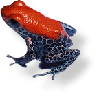
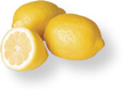
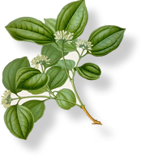
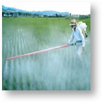

| |
|

- Which organism has the most poisonous toxin?
- Which compound was extensively used as pesticide on crops and also on humans but is now banned in most of the world?
- Which molecule is explosive?
- Which amino acid present in turkey is said to make you calm and sleepy?
- What chemicals are used by insects such as cockroaches to communicate with each other?
- What gas is formed when Alka-Seltzer reacts with water?
- What is the main effect of caffeine that is found in tea, coffee, and chocolate?

- What carcinogen will you find in exhaust fumes and in tobacco smoke?
- What alcohol impurity can make you blind?
- Which is the most common painkiller used?
- What substance is responsible for the bad smell of the liquid sprayed by skunks?
- What main molecule is present in nail polish remover that makes it work?
- Which of these minerals can you find in your body?
- What is the hardest mineral known to man?
- What molecule is the primary male sex hormone?
- Which one of these molecules is a female sex hormone?
- What compound makes us cry when we cut onions?

- Which gas forms a shielding layer in the Earth's stratosphere and protects us from harmful UV radiation but is destructive for the environment in the troposphere?
- Which acid is responsible for the tart taste of lemons, oranges, and pineapples?
- What substance is responsible for giving skin its color?
- What molecule present in carrots can cause the skin to look orange if consumed in excess?
- What is the major component of atmospheric gas?
- What molecule causes the burn from ants and are found in the leaves of stinging nettle?
- What component is responsible for the agonizing itch associated with poison ivy?

- What is the best known and most abundant steroid in the body?
- Which of these compounds is the "universal energy currency" of all living organisms?
- Which of these molecules was the first antibiotic that was successfully used in treating bacterial infections?
- Which of these is the most common and one of the most important carbohydrate?
|
|
|